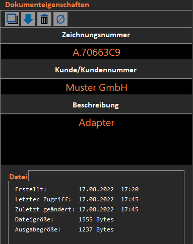
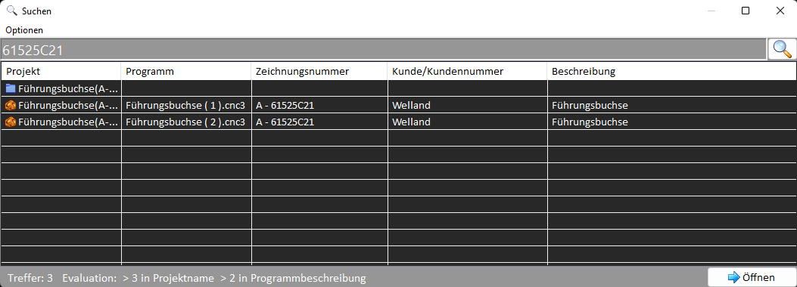

Grundlagen
Mit dieser Anwendung können G-Code basierte Dateien verwaltet, organisiert, editiert und archiviert werden. Zudem ermöglicht es den Datenaustausch über eine serielle Schnittstelle.
Diese Anwendung wurde speziell für EPL2 Programme entwickelt, sollte aber auch für andere Einsatzmöglichkeiten geeignet sein.
Es stehen folgende Anwendungskomponenten zur verfügung:
- Datei-Explorer um Dateien zu organisieren.
- Editor mit Tab-Steuerung um mehrere Dateien gleichzeitig zu editieren.
- Vorlagen Manager für die Erstellung, Organisierung von Ausschnitten.
- Suchfunktion um gezielt nach Dokumenten oder Dokument-Eigenschaften zu suchen.
- Manager für die Übertragung der Programme über die serielle Schnittstelle.
Dateiformat
Diese Anwendung verwendet ein spezielles Dateiformat (*.cnc3). Dieses Format ermöglicht es sogenannte Tags mit dem eigentlichen NC-Inhalt abzuspeichern. Diese Tags können über das Dokument-Eigenschaften Fenster im Editor erstellt werden. Über die Suchfunktion kann auch direkt nach diesen Dokument-Eigenschaften gesucht werden. Andere Text-basierte Dateiformate können importiert und exportiert werden, jedoch nicht aktiv verwaltet werden.
Titel-Menü
Das Titel-Menü bietet Zugang zu Anwendungsspezifischen Einstellungen und Informationen.
Es beinhaltet Schaltflächen für folgende Funktionen:
- Einstellungen der Anwendung
- Hilfe, bzw. Handbuch
- Aufrufen der Website
- Anzeigen der Chronik
Datei-Explorer
Der Datei-Explorer dient dem Organisieren der Dateien. Ordner und Dateien können erzeugt, gelöscht, kopiert, verschoben und umbenannt werden.
Durch Doppelklick wird die entsprechende Datei im Editor geöffnet.
Wird ein Rechtsklick auf das Objekt ausgeführt, dann öffnet sich ein Kontext-Menü mit den Funktionen die auf das Objekt angewendet werden können.
Die Toolbar über dem Explorer bietet die gleichen Funktionen wie das Kontext-Menü.
Editor
Mit dem Editor können Dateien bearbeitet werden. Die horizontale Toolbar bietet bekannte Funktionen wie Öffnen, Speichern, Kopieren, Ausschneiden, usw.
Zudem kann der Inhalt des Editors durch Schaltflächen auf der Toolbar auch Exportiert und über die serielle Schnittstelle gesendet bzw. empfangen werden.
Die vertikale Toolbar dient der Steuerung den Editor-Verhaltens. Es können Eigenschaften wie automatische Großbuchstaben, automatische Satznummern, automatische Vervollständigung, Textfarbe und der Zeilenfokus an- und abgeschaltet werden.
Ausserdem kann der gesamte Inhalt des Editors neu formatiert werden und die Satznummern sequenziert werden.

Durch die Tab-Steuerung können viele Dateien gleichzeitig bearbeitet werden.
Jeder Tab beinhaltet eine Schaltfläche die ein Kontext-Menü öffnet welches Aktionen auf dem entsprechenden Tab ausführen kann.
Zum Beispiel kann der Pfad im Explorer expandiert werden um die Position in der Baum-Ansicht anzuzeigen.
Oder der Inhalt des Editors kann als Standard-Vorlage festgelegt werden. Die Standard-Vorlage wird in jeden neuen Tab eingefügt, wenn die entsprechende Einstellung gesetzt ist.
Auf der rechten Seite befindet sich das Eigenschaftenfenster für die entsprechende Datei im Editor.
Die hier festgelegten Eigenschaften werden zusammen mit dem NC-Inhalt gespeichert. Später kann gezielt danach gesucht werden.
Vorlagen-Manager
Der Vorlagen-Manager dient dem Erstellunen und Verwalten von Vorlagen.
Die Steuerung erfolgt wie im Datei-Explorer über ein Kontext-Menü welches über Rechtsklick geöffnet wird oder über die Toolbar.

Vorlagen können mit Filtern geordnet und organisiert werden. Soll ein Ausschnitt hinzugefügt werden, dann öffnet sich ein PopUp Fenster.
Der Inhalt für den Ausschnitt kann dort direkt geschrieben werden oder einfach hineinkopiert werden. Wenn vorher ein Bereich im Editor markiert wurde dann befindet sich dieser bereits im Eingabefenster wenn sich das Fenster öffnet.
Suchfunktion
Die Suchfunktion ermöglich das schnelle Finden von Dateien. Es kann sowohl klassisch nach Dateinamen und Ordnernamen gesucht werden oder auch nach den Dateieigenschaften die im Eigenschaftenfenster festgelegt wurden.

Wonach genau gesucht bzw. nicht gesucht werden soll kann in den Einstellungen der Anwendung als auch über das Menü der Suchfensters festgelegt werden.
Es können auch mehrere gefundene Dateien gleichzeitig geöffnet werden.
Serielle Datenübertragung
Durch betätigen der Schaltflächen für Senden/Empfangen über die serielle Schnittstelle öffnet sich das Fenster für die Datenübertragung.
Das Verhalten dieses Fensters kann über die Einstellungen angepasst werden. Die Konfiguration der Schnittstelle kann ebenfalls über die Einstellungen der Anwendung festgelegt werden.
Wird auf senden geklickt, dann wird der aktuelle Inhalt des aktiven Tabs gesendet.
Wird auf empfangen geklickt, dann wird auf Daten gewartet. Ist der Empfang abgeschlossen können die Daten in den aktiven Tab übertragen werden.